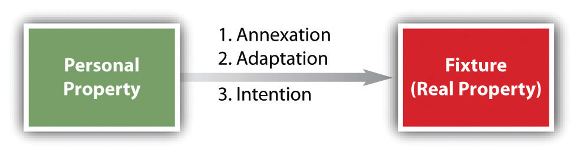

After reading this chapter, you should understand the following:
In this chapter, we examine the general nature of property rights and the law relating to personal property—with special emphasis on acquisition and fixtures. In Chapter 18 "Intellectual Property", we discuss intellectual property, a kind of personal property that is increasingly profitable.
Property, which seems like a commonsense concept, is difficult to define in an intelligible way; philosophers have been striving to define it for the past 2,500 years. To say that “property is what we own” is to beg the question—that is, to substitute a synonym for the word we are trying to define. Blackstone’s famous definition is somewhat wordy: “The right of property is that sole and despotic dominion which one man claims and exercises over the external things of the world, in total exclusion of the right of any other individual in the universe. It consists in the free use, enjoyment, and disposal of all a person’s acquisitions, without any control or diminution save only by the laws of the land.” A more concise definition, but perhaps too broad, comes from the Restatement of the Law of Property, which defines property as the “legal relationship between persons with respect to a thing.”
The Restatement’s definition makes an important point: property is a legal relationship, the power of one person to use objects in ways that affect others, to exclude others from the property, and to acquire and transfer property. Still, this definition does not contain a specific list of those nonhuman “objects” that could be in such a relationship. We all know that we can own personal objects like iPods and DVDs, and even more complex objects like homes and minerals under the ground. Property also embraces objects whose worth is representative or symbolic: ownership of stock in a corporation is valued not for the piece of paper called a stock certificate but for dividends, the power to vote for directors, and the right to sell the stock on the open market. Wholly intangible things or objects like copyrights and patents and bank accounts are capable of being owned as property. But the list of things that can be property is not fixed, for our concept of property continues to evolve. Collateralized debt obligations (CDOs) and structured investment vehicles (SIVs), prime players in the subprime mortgage crisis, were not on anyone’s list of possible property even fifteen years ago.
Property is not just a legal concept, of course, and different disciplines express different philosophies about the purpose of property and the nature of property rights. To the jurist, property rights should be protected because it is just to do so. To an economist, the legal protection of property rights functions to create incentives to use resources efficiently. For a truly efficient system of property rights, some economists would require universality (everything is owned), exclusivity (the owners of each thing may exclude all others from using it), and transferability (owners may exchange their property). Together, these aspects of property would lead, under an appropriate economic model, to efficient production and distribution of goods. But the law of property does not entirely conform to the economic conception of the ownership of productive property by private parties; there remain many kinds of property that are not privately owned and some parts of the earth that are considered part of “the commons.” For example, large areas of the earth’s oceans are not “owned” by any one person or nation-state, and certain land areas (e.g., Yellowstone National Park) are not in private hands.
Property can be classified in various ways, including tangible versus intangible, private versus public, and personal versus real. Tangible propertyThat which physically exists, like a building, a popsicle stand, a hair dryer, or a steamroller. is that which physically exists, like a building, a popsicle stand, a hair dryer, or a steamroller. Intangible propertySomething without physical reality that entitles the owner to certain benefits; stocks, bonds, and intellectual property would be common examples. is something without physical reality that entitles the owner to certain benefits; stocks, bonds, and intellectual property would be common examples. Public propertyThat which is owned by any branch of government; private property is that which is owned by anyone else, including a corporation. is that which is owned by any branch of government; private propertyAll property, real or personal, that is not publicly owned or part of “the commons.” is that which is owned by anyone else, including a corporation.
Perhaps the most important distinction is between real and personal property. Essentially, real propertyLand and all structures and fixtures that have legally become part of the land. is immovable; personal propertyAny property that is not real property. is movable. At common law, personal property has been referred to as “chattels.” When chattels become affixed to real property in a certain manner, they are called fixtures and are treated as real property. (For example, a bathroom cabinet purchased at Home Depot and screwed into the bathroom wall may be converted to part of the real property when it is affixed.) Fixtures are discussed in Section 36.3 "Fixtures" of this chapter.
In our legal system, the distinction between real and personal property is significant in several ways. For example, the sale of personal property, but not real property, is governed by Article 2 of the Uniform Commercial Code (UCC). Real estate transactions, by contrast, are governed by the general law of contracts. Suppose goods are exchanged for realty. Section 2-304 of the UCC says that the transfer of the goods and the seller’s obligations with reference to them are subject to Article 2, but not the transfer of the interests in realty nor the transferor’s obligations in connection with them.
The form of transfer depends on whether the property is real or personal. Real property is normally transferred by a deed, which must meet formal requirements dictated by state law. By contrast, transfer of personal property often can take place without any documents at all.
Another difference can be found in the law that governs the transfer of property on death. A person’s heirs depend on the law of the state for distribution of his property if he dies intestate—that is, without a will. Who the heirs are and what their share of the property will be may depend on whether the property is real or personal. For example, widows may be entitled to a different percentage of real property than personal property when their husbands die intestate.
Tax laws also differ in their approach to real and personal property. In particular, the rules of valuation, depreciation, and enforcement depend on the character of the property. Thus real property depreciates more slowly than personal property, and real property owners generally have a longer time than personal property owners to make good unpaid taxes before the state seizes the property.
Property is difficult to define conclusively, and there are many different classifications of property. There can be public property as well as private property, tangible property as well as intangible property, and, most importantly, real property as well as personal property. These are important distinctions, with many legal consequences.
Most legal issues about personal property center on its acquisition. Acquisition by purchase is the most common way we acquire personal property, but there are at least five other ways to legally acquire personal property: (1) possession, (2) finding lost or misplaced property, (3) gift, (4) accession, and (5) confusion.
It is often said that “possession is nine-tenths of the law.” There is an element of truth to this, but it’s not the whole truth. For our purposes, the more important question is, what is meant by “possession”? Its meaning is not intuitively obvious, as a moment’s reflection will reveal. For example, you might suppose than you possess something when it is physically within your control, but what do you say when a hurricane deposits a boat onto your land? What if you are not even home when this happens? Do you possess the boat? Ordinarily, we would say that you don’t, because you don’t have physical control when you are absent. You may not even have the intention to control the boat; perhaps instead of a fancy speedboat in relatively good shape, the boat is a rust bucket badly in need of repair, and you want it removed from your front yard.
Even the element of physical domination of the object may not be necessary. Suppose you give your new class ring to a friend to examine. Is it in the friend’s possession? No: the friend has custody, not possession, and you retain the right to permit a second friend to take it from her hands. This is different from the case of a bailment, in which the bailor gives possession of an object to the bailee. For example, a garage (a bailee) entrusted with a car for the evening, and not the owner, has the right to exclude others from the car; the owner could not demand that the garage attendants refrain from moving the car around as necessary.
From these examples, we can see that possession or physical control must usually be understood as the power to exclude others from using the object. Otherwise, anomalies arise from the difficulty of physically controlling certain objects. It is more difficult to exercise control over a one-hundred-foot television antenna than a diamond ring. Moreover, in what sense do you possess your household furniture when you are out of the house? Only, we suggest, in the power to exclude others. But this power is not purely a physical one: being absent from the house, you could not physically restrain anyone. Thus the concept of possession must inevitably be mixed with legal rules that do or could control others.
Possession confers ownership in a restricted class of cases only: when no person was the owner at the time the current owner took the object into his possession. The most obvious categories of objects to which this rule of possession applies are wild animals and abandoned goods. The rule requires that the would-be owner actually take possession of the animal or goods; the hunter who is pursuing a particular wild animal has no legal claim until he has actually captured it. Two hunters are perfectly free to pursue the same animal, and whoever actually grabs it will be the owner.
But even this simple rule is fraught with difficulties in the case of both wild animals and abandoned goods. We examine abandoned goods in Section 36.2.2 "Lost or Misplaced Property". In the case of wild game, fish in a stream, and the like, the general rule is subject to the rights of the owner of the land on which the animals are caught. Thus even if the animals caught by a hunter are wild, as long as they are on another’s land, the landowner’s rights are superior to the hunter’s. Suppose a hunter captures a wild animal, which subsequently escapes, and a second hunter thereafter captures it. Does the first hunter have a claim to the animal? The usual rule is that he does not, for once an animal returns to the wild, ownership ceases.
At common law, a technical distinction arose between lost and misplaced property. An object is lost if the owner inadvertently and unknowingly lets it out of his possession. It is merely misplaced if the owner intentionally puts it down, intending to recover it, even if he subsequently forgets to retrieve it. These definitions are important in considering the old saying “Finders keepers, losers weepers.” This is a misconception that is, at best, only partially true, and more often false. The following hierarchy of ownership claims determines the rights of finders and losers.
First, the owner is entitled to the return of the property unless he has intentionally abandoned it. The finder is said to be a quasi-bailee for the true owner, and as bailee she owes the owner certain duties of care. The finder who knows the owner or has reasonable means of discovering the owner’s identity commits larceny if she holds on to the object with the intent that it be hers. This rule applies only if the finder actually takes the object into her possession. For example, if you spot someone’s wallet on the street you have no obligation to pick it up; but if you do pick it up and see the owner’s name in it, your legal obligation is to return it to the rightful owner. The finder who returns the object is not automatically entitled to a reward, but if the loser has offered a reward, the act of returning it constitutes performance of a unilateral contract. Moreover, if the finder has had expenses in connection with finding the owner and returning the property, she is entitled to reasonable reimbursement as a quasi-bailee. But the rights of the owner are frequently subject to specific statutes, such as the one discussed in Bishop v. Ellsworth in Section 36.4.1 "Lost or Misplaced Property".
Second, if the owner fails to claim the property within the time allowed by statute or has abandoned it, then the property goes to the owner of the real estate on which it was found if (1) the finder was a trespasser, (2) the goods are found in a private place (though what exactly constitutes a private place is open to question: is the aisle of a grocery store a private place? the back of the food rack? the stockroom?), (3) the goods are buried, or (4) the goods are misplaced rather than lost.
If none of these conditions apply, then the finder is the owner. These rules are considered in the Bishop case, (see Section 36.4.1 "Lost or Misplaced Property").
A giftA voluntary transfer of property without consideration or compensation. is a voluntary transfer of property without consideration or compensation. It is distinguished from a sale, which requires consideration. It is distinguished from a promise to give, which is a declaration of an intention to give in the future rather than a present transfer. It is distinguished from a testamentary disposition (will), which takes effect only upon death, not upon the preparation of the documents. Two other distinctions are worth noting. An inter vivosA gift made between living persons. (enter VYE vos) gift is one made between living persons without conditions attached. A causa mortisA gift made by someone in contemplating death in the near future. (KAW zuh mor duz) gift is made by someone contemplating death in the near future.
Figure 36.1 Gift Requirements

To make an effective gift inter vivos or causa mortis, the law imposes three requirements: (1) the donor must deliver a deed or object to the donee; (2) the donor must actually intend to make a gift, and (3) the donee must accept (see Figure 36.1 "Gift Requirements").
Although it is firmly established that the object be delivered, it is not so clear what constitutes delivery. On the face of it, the requirement seems to be that the object must be transferred to the donee’s possession. Suppose your friend tells you he is making a gift to you of certain books that are lying in a locked trunk. If he actually gives you the trunk so that you can carry it away, a gift has been made. Suppose, however, that he had merely given you the key, so that you could come back the next day with your car. If this were the sole key, the courts would probably construe the transfer of the key as possession of the trunk. Suppose, instead, that the books were in a bank vault and the friend made out a legal document giving both you and him the power to take from the bank vault. This would not be a valid gift, since he retained power over the goods.
The intent to make a gift must be an intent to give the property at the present time, not later. For example, suppose a person has her savings account passbook put in her name and a friend’s name, intending that on her death the friend will be able to draw out whatever money is left. She has not made a gift, because she did not intend to give the money when she changed the passbook. The intent requirement can sometimes be sidestepped if legal title to the object is actually transferred, postponing to the donee only the use or enjoyment of the property until later. Had the passbook been made out in the name of the donee only and delivered to a third party to hold until the death of the donor, then a valid gift may have been made. Although it is sometimes difficult to discern this distinction in practice, a more accurate statement of the rule of intent is this: Intention to give in the future does not constitute the requisite intent, whereas present gifts of future interests will be upheld.
In the usual case, the rule requiring acceptance poses no difficulties. A friend hands you a new book and says, “I would like you to have this.” Your taking the book and saying “thank-you” is enough to constitute your acceptance. But suppose that the friend had given you property without your knowing it. For example, a secret admirer puts her stock certificates jointly in your name and hers without telling you. Later, you marry someone else, and she asks you to transfer the certificates back to her name. This is the first you have heard of the transaction. Has a gift been made? The usual answer is that even though you had not accepted the stock when the name change was made, the transaction was a gift that took effect immediately, subject to your right to repudiate when you find out about it. If you do not reject the gift, you have joint rights in the stock. But if you expressly refuse to accept a gift or indicate in some manner that you might not have accepted it, then the gift is not effective. For example, suppose you are running for office. A lobbyist whom you despise gives you a donation. If you refuse the money, no gift has been made.
Even though the requirements of delivery, intent, and acceptance apply to gifts causa mortis as well as inter vivos, a gift causa mortis (one made in contemplation of death) may be distinguished from a gift inter vivos on other grounds. The difference between the two lies in the power of the donor to revoke the gift before he dies; in other words, the gift is conditional on his death. Since the law does not permit gifts that take place in the future contingent on some happening, how can it be that a gift causa mortis is effective? The answer lies in the nature of the transfer: the donee takes actual title when the gift is made; should the donor not in fact die or should he revoke the gift before he dies, then and only then will the donee lose title. The difference is subtle and amounts to the difference between saying “If I die, the watch is yours” and “The watch is yours, unless I survive.” In the former case, known as a condition precedent, there is no valid gift; in the latter case, known as a condition subsequent, the gift is valid.
Every state has adopted either the Uniform Gifts to Minors Act (UGMA) or the Uniform Transfers to Minors Act (UTMA), both of which establish the manner by which irrevocable gifts are made to minors. Under these acts, a custodian holds the gifts until the minor reaches the age of eighteen, twenty-one, or twenty-five, depending on state law. Gifts under UGMA are limited for the most part to money or securities, while UTMA allows other types of gifts as well, such as real estate or tangible personal property.
The federal government and many states impose gift taxes on gifts above a certain dollar amount.
An accessionSomething that is added to what one already possesses. is something that is added to what one already possesses. In general, the rule is that the owner of the thing owns the additional thing that comes to be attached to it. For example, the owner of a cow owns her calves when she gives birth. But when one person adds value to another person’s property, either through labor alone or by adding new materials, the rule must be stated somewhat differently. The general rule is this: when goods are added to goods, the owner of the principal goods becomes the owner of the enhanced product. For example, a garage uses its paint to repaint its customer’s automobile. The car owner, not the painter, is the owner of the finished product.
When someone has wrongfully converted—that is, taken as her own—the property of another, the owner may sue for damages, either to recover his property or its value. But a problem arises when the converter has added to the value of that property. In general, the courts hold that when the conversion is willful, the owner is entitled to the full value of the goods as enhanced by the converter. Suppose that a carpenter enters a ten-acre forest that he knows belongs to his neighbor, cuts down one hundred trees, transports them to his shop, and cuts them up into standard lumber, thus increasing their market value. The owner is entitled to this full value, and the carpenter will get nothing for his trouble. Thus the willful converter loses the value of his labor or materials. If, on the other hand, the conversion was innocent, or at most negligent, the rule is somewhat more uncertain. Generally the courts will award the forest owner the value of the standing timber, giving the carpenter the excess attributable to his labor and transportation. A more favorable treatment of the owner is to give her the full value of the lumber as cut, remitting to the carpenter the value of his expenses.
In accession, the goods of one owner are transformed into a more valuable commodity or are inextricably united with the goods of another to form a constituent part. Still another type of joining is known as confusionWhere personal property is intermingled, negligently or intentionally, with the personal property of others., and it occurs when goods of different owners, while maintaining their original form, are commingled. A common example is the intermingling of grain in a silo. But goods that are identifiable as belonging to a particular person—branded cattle, for instance—are not confused, no matter how difficult it may be to separate herds that have been put together.
When the goods are identical, no particular problem of division arises. Assuming that each owner can show how much he has contributed to the confused mass, he is entitled to that quantity, and it does not matter which particular grains or kernels he extracts. So if a person, seeing a container of grain sitting on the side of the road, mistakes it for his own and empties it into a larger container in his truck, the remedy is simply to restore a like quantity to the original owner. When owners of like substances consent to have those substances combined (such as in a grain silo), they are said to be tenants in common, holding a proportional share in the whole.
In the case of willful confusion of goods, many courts hold that the wrongdoer forfeits all his property unless he can identify his particular property. Other courts have modified this harsh rule by shifting the burden of proof to the wrongdoer, leaving it up to him to claim whatever he can establish was his. If he cannot establish what was his, then he will forfeit all. Likewise, when the defendant has confused the goods negligently, without intending to do so, most courts will tend to shift to the defendant the burden of proving how much of the mass belongs to him.
Other than outright purchase of personal property, there are various ways in which to acquire legal title. Among these are possession, gift, accession, confusion, and finding property that is abandoned, lost, or mislaid, especially if the abandoned, lost, or mislaid property is found on real property that you own.
A fixtureAn object that was once personal property that has become so affixed to land or structures that it is legally a part of the real property. is an object that was once personal property but that has become so affixed to land or structures that it is considered legally a part of the real property. For example, a stove bolted to the floor of a kitchen and connected to the gas lines is usually considered a fixture, either in a contract for sale, or for testamentary transfer (by will). For tax purposes, fixtures are treated as real property.
Figure 36.2 Fixture Tests
Obviously, no clear line can be drawn between what is and what is not a fixture. In general, the courts look to three tests to determine whether a particular object has become a fixture: annexation, adaptation, and intention (see Figure 36.2 "Fixture Tests").
The object must be annexed or affixed to the real property. A door on a house is affixed. Suppose the door is broken and the owner has purchased a new door made to fit, but the house is sold before the new door is installed. Most courts would consider that new door a fixture under a rule of constructive annexation. Sometimes courts have said that an item is a fixture if its removal would damage the real property, but this test is not always followed. Must the object be attached with nails, screws, glue, bolts, or some other physical device? In one case, the court held that a four-ton statue was sufficiently affixed merely by its weight.Snedeker v. Warring, 12 N.Y. 170 (1854).
Another test is whether the object is adapted to the use or enjoyment of the real property. Examples are home furnaces, power equipment in a mill, and computer systems in bank buildings.
Recent decisions suggest that the controlling test is whether the person who actually annexes the object intends by so doing to make it a permanent part of the real estate. The intention is usually deduced from the circumstances, not from what a person might later say her intention was. If an owner installs a heating system in her house, the law will presume she intended it as a fixture because the installation was intended to benefit the house; she would not be allowed to remove the heating system when she sold the house by claiming that she had not intended to make it a fixture.
Because fixtures have a hybrid nature (once personal property, subsequently real property), they generate a large number of disputes. We have already examined disputes between mortgagees and secured parties (Chapter 33 "Secured Transactions and Suretyship"). Two other types of disputes are discussed here.
When a homeowner sells her house, the problem frequently crops up as to whether certain items in the home have been sold or may be removed by the seller. Is a refrigerator, which simply plugs into the wall, a fixture or an item of personal property? If a dispute arises, the courts will apply the three tests—annexation, adaptation, and intention. Of course, the simplest way of avoiding the dispute is to incorporate specific reference to questionable items in the contract for sale, indicating whether the buyer or the seller is to keep them.
Tenants frequently install fixtures in the buildings they rent or the property they occupy. A company may install tens of thousands of dollars worth of equipment; a tenant in an apartment may bolt a bookshelf into the wall or install shades over a window. Who owns the fixtures when the tenant’s lease expires? The older rule was that any fixture, determined by the usual tests, must remain with the landlord. Today, however, certain types of fixtures—known as tenant’s fixturesFixtures added to rental property that become property of the owner.—stay with the tenant. These fall into three categories: (1) trade fixtures—articles placed on the premises to enable the tenant to carry on his or her trade or business in the rented premises; (2) agricultural fixtures—devices installed to carry on farming activities (e.g., milling plants and silos); (3) domestic fixtures—items that make a tenant’s personal life more comfortable (carpeting, screens, doors, washing machines, bookshelves, and the like).
The three types of tenant’s fixtures remain personal property and may be removed by the tenant if the following three conditions are met: (1) They must be installed for the requisite purposes of carrying on the trade or business or the farming or agricultural pursuits or for making the home more comfortable, (2) they must be removable without causing substantial damage to the landlord’s property, and (3) they must be removed before the tenant turns over possession of the premises to the landlord. Again, any debatable points can be resolved in advance by specifying them in the written lease.
Personal property is often converted to real property when it is affixed to real property. There are three tests that courts use to determine whether a particular object has become a fixture and thus has become real property: annexation, adaptation, and intention. Disputes over fixtures often arise in the transfer of real property and in landlord-tenant relations.
Bishop v. Ellsworth
91 Ill. App.2d 386, 234 N.E. 2d 50 (1968)
OPINION BY: STOUDER, Presiding Justice
Dwayne Bishop, plaintiff, filed a complaint alleging that on July 21, 1965, defendants, Mark and Jeff Ellsworth and David Gibson, three small boys, entered his salvage yard premises at 427 Mulberry Street in Canton, without his permission, and while there happened upon a bottle partially embedded in the loose earth on top of a landfill, wherein they discovered the sum of $12,590 in US currency. It is further alleged that said boys delivered the money to the municipal chief of police who deposited it with defendant, Canton State Bank. The complaint also alleges defendants caused preliminary notices to be given as required by Ill. Rev. Stats., chapter 50, subsections 27 and 28 (1965), but that such statute or compliance therewith does not affect the rights of the plaintiff. [The trial court dismissed the plaintiff’s complaint.]
…It is defendant’s contention that the provisions of Ill Rev Stats, chapter 50, subsections 27 and 28 govern this case. The relevant portions of this statute are as follows:
“27. Lost goods…If any person or persons shall hereafter find any lost goods, money, bank notes, or other choses in action, of any description whatever, such person or persons shall inform the owner thereof, if known, and shall make restitution of the same, without any compensation whatever, except the same shall be voluntarily given on the part of the owner. If the owner be unknown, and if such property found is of the value of $ 15 or upwards, the finder…shall, within five days after such finding…appear before some judge or magistrate…and make affidavit of the description thereof, the time and place when and where the same was found, that no alteration has been made in the appearance thereof since the finding of the same, that the owner thereof is unknown to him and that he has not secreted, withheld or disposed of any part thereof. The judge or magistrate shall enter the value of the property found as near as he can ascertain in his estray book together with the affidavit of the finder, and shall also, within ten days after the proceedings have been entered on his estray book, transmit to the county clerk a certified copy thereof, to be by him recorded in his estray book and to file the same in his office…28. Advertisement…If the value thereof exceeds the sum of $ 15, the county clerk, within 20 days after receiving the certified copy of the judge or magistrate’s estray record shall cause an advertisement to be set up on the court house door, and in 3 other of the most public places in the county, and also a notice thereof to be published for 3 weeks successively in some public newspaper printed in this state and if the owner of such goods, money, bank notes, or other choses in action does not appear and claim the same and pay the finder’s charges and expenses within one year after the advertisement thereof as aforesaid, the ownership of such property shall vest in the finder.”
* * *
We think it apparent that the statute to which defendants make reference provides a means of vesting title to lost property in the finder where the prescribed search for the owner proves fruitless. This statute does not purport to provide for the disposition of property deemed mislaid or abandoned nor does it purport to describe or determine the right to possession against any party other than the true owner. The plain meaning of this statute does not support plaintiff’s position that common law is wholly abrogated thereby. The provisions of the statute are designed to provide a procedure whereby the discoverer of “lost” property may be vested with the ownership of said property even as against the true owner thereof, a right which theretofore did not exist at common law. In the absence of any language in the statute from which the contrary can be inferred it must be assumed that the term “lost” was used in its generally accepted legal sense and no extension of the term was intended. Thus the right to possession of discovered property still depends upon the relative rights of the discoverer and the owner of the locus in quo and the distinctions which exist between property which is abandoned, mislaid, lost or is treasure trove. The statute assumes that the discoverer is in the rightful possession of lost property and proceedings under such statute is (sic) not a bar where the issue is a claim to the contrary. There is a presumption that the owner or occupant of land or premises has custody of property found on it or actually imbedded in the land. The ownership or possession of the locus in quo is related to the right to possession of property discovered thereon or imbedded therein in two respects. First, if the premises on which the property is discovered are private it is deemed that the property discovered thereon is and always has been in the constructive possession of the owner of said premises and in a legal sense the property can be neither mislaid nor lost. Pyle v. Springfield Marine Bank, 330 Ill App 1, 70 NE2d 257. Second, the question of whether the property is mislaid or lost in a legal sense depends upon the intent of the true owner. The ownership or possession of the premises is an important factor in determining such intent. If the property be determined to be mislaid, the owner of the premises is entitled to the possession thereof against the discoverer. It would also appear that if the discoverer is a trespasser such trespasser can have no claim to possession of such property even if it might otherwise be considered lost.
…The facts as alleged in substance are that the Plaintiff was the owner and in possession of real estate, that the money was discovered in a private area of said premises in a bottle partially imbedded in the soil and that such property was removed from the premises by the finders without any right or authority and in effect as trespassers. We believe the averment of facts in the complaint substantially informs the defendants of the nature of and basis for the claim and is sufficient to state a cause of action. [The trial court’s dismissal of the Plaintiff’s complaint is reversed and the case is remanded.]
Property is the legal relationship between persons with respect to things. The law spells out what can be owned and the degree to which one person can assert an interest in someone else’s things. Property is classified in several ways: personal versus real, tangible versus intangible, private versus public. The first distinction, between real and personal, is the most important, for different legal principles often apply to each. Personal property is movable, whereas real property is immovable.
Among the ways personal property can be acquired are: by (1) possession, (2) finding, (3) gift, (4) accession, and (5) confusion.
Possession means the power to exclude others from using an object. Possession confers ownership only when there is no owner at the time the current owner takes possession. “Finders keepers, losers weepers” is not a universal rule; the previous owner is entitled to return of his goods if it is reasonably possible to locate him. If not, or if the owner does not claim his property, then it goes to the owner of the real estate on which it was found, if the finder was a trespasser, or the goods were buried, were in a private place, or were misplaced rather than lost. If none of these conditions applies, the property goes to the finder.
A gift is a voluntary transfer of property without consideration. Two kinds of gifts are possible: inter vivos and causa mortis. To make an effective gift, (1) the donor must make out a deed or physically deliver the object to the donee, (2) the donor must intend to make a gift, and (3) the donee must accept the gift. Delivery does not always require physical transfer; sometimes, surrender of control is sufficient. The donor must intend to give the gift now, not later.
Accession is an addition to that which is already owned—for example, the birth of calves to a cow owned by a farmer. But when someone else, through labor or by supplying material, adds value, the accession goes to the owner of the principal goods.
Confusion is the intermingling of like goods so that each, while maintaining its form, becomes a part of a larger whole, like grain mixed in a silo. As long as the goods are identical, they can easily enough be divided among their owners.
A fixture is a type of property that ceases to be personal property and becomes real property when it is annexed or affixed to land or buildings on the land and adapted to the use and enjoyment of the real property. The common-law rules governing fixtures do not employ clear-cut tests, and sellers and buyers can avoid many disputes by specifying in their contracts what goes with the land. Tenant’s fixtures remain the property of the tenant if they are for the convenience of the tenant, do not cause substantial damage to the property when removed, and are removed before possession is returned to the landlord.
Personal property is defined as property that is
Personal property can be acquired by
A gift causa mortis is
To make a gift effective,
Tenant’s fixtures